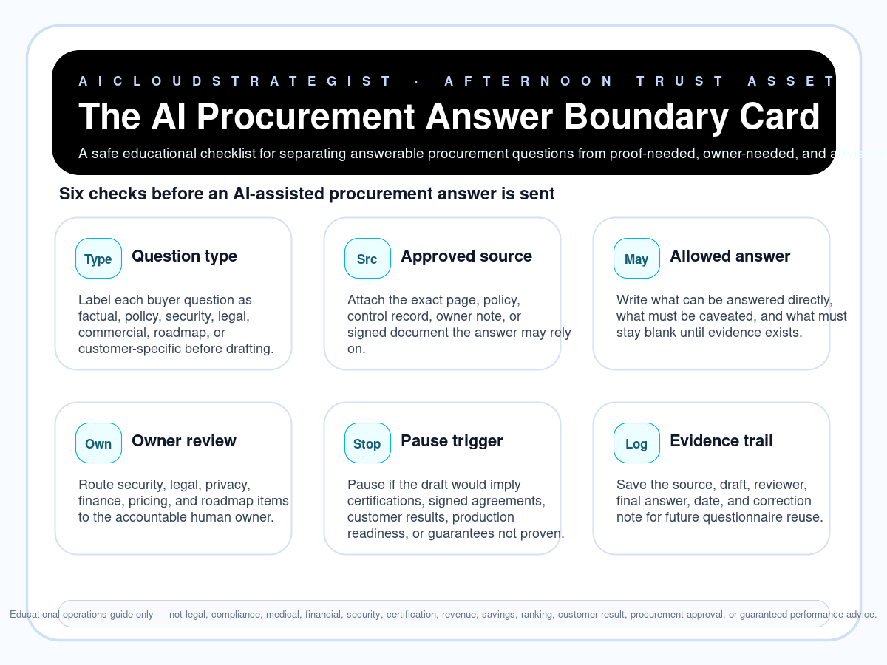

Afternoon publication · procurement trust
The AI Procurement Answer Boundary Card
A safe educational checklist for separating answerable procurement questions from proof-needed, owner-needed, and adviser-needed items before an AI-assisted response is sent.

Six answer-boundary checks
- Question type: Label each buyer question as factual, policy, security, legal, commercial, roadmap, or customer-specific before drafting.
- Approved source: Attach the exact page, policy, control record, owner note, or signed document the answer may rely on.
- Allowed answer: Write what can be answered directly, what must be caveated, and what must stay blank until evidence exists.
- Owner review: Route security, legal, privacy, finance, pricing, and roadmap items to the accountable human owner.
- Pause trigger: Pause if the draft would imply certifications, signed agreements, customer results, production readiness, or guarantees not proven.
- Evidence trail: Save the source, draft, reviewer, final answer, date, and correction note for future questionnaire reuse.
Reusable routing examples
| Question area | Answer route | Pause trigger | Human owner |
|---|---|---|---|
| Security control | Answer only from approved control evidence or route to security owner | Pause if the draft implies certification, audit result, or coverage not evidenced | Security / technical owner |
| Privacy / data use | Use approved data-flow and processor documentation only | Pause for legal/privacy interpretation or customer-specific commitment | Privacy / legal / data owner |
| Commercial / roadmap | Route to commercial and delivery owner before answering | Pause if timing, price, SLA, or delivery guarantee is not approved | Sales / delivery owner |
Truth boundary
Educational operations guide only — not legal, compliance, medical, financial, security, certification, revenue, savings, ranking, customer-result, procurement-approval, or guaranteed-performance advice.